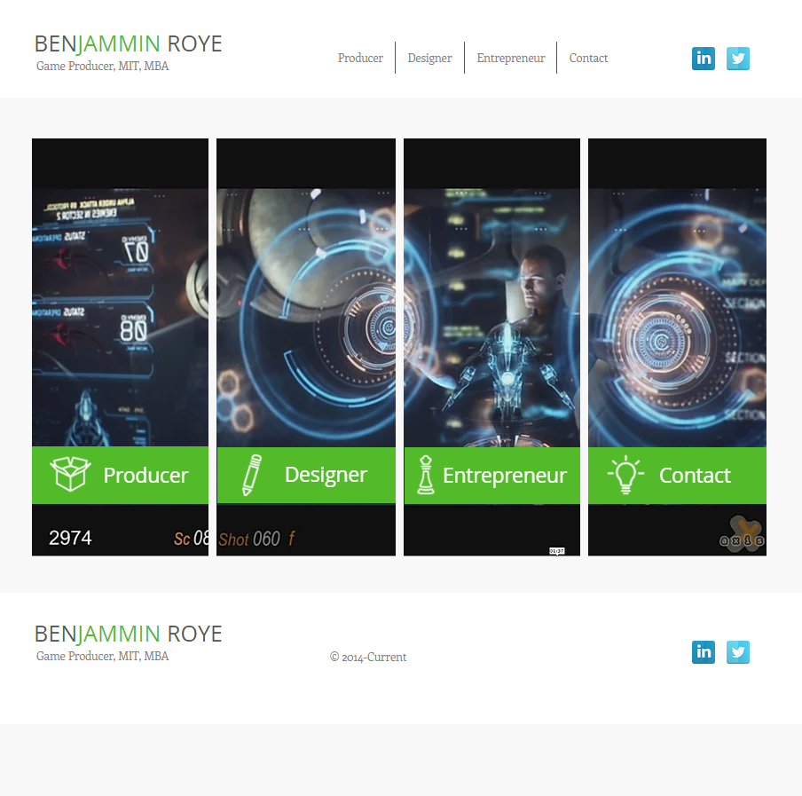

This portfolio is by far my favorite. Navigation is straight forward, the green and black is a nice color combination, and the site contains a lot of information and visuals blinded nicely. Each of the panels can be clicked that links to a different page

The consistent color scheme of black and white is nicely done. The buttons at the top are solid categories for a game writer portfolio. As a game writer, Michael shows visuals from his games, and they are beautiful and eye-catching. One small improvement would be a few words discussing what the game was about. Additionally, the portfolio looks clean, but it isn’t unique or have an individual flare to it. The writing portfolio does well to verbally sell the portfolio, but it does not visually appeal to the audience.
This site has good information about the food chain distributed throughout the page. The only area I did not like was the gif of the falling burritos in the background, which were distracting from the reason for being on the page. However, the ordering button was on the gif, and the moving image does draw the audience's attention to the button. The images of the food are inticing for the intended audience, and they look appetizing. The clean design of the website lends itself to a positive user experience except for the falling burritos.
The grid layout of the games is good and showcases intriguing visuals from the different games that Josh Morton. The main webpage does not lend itself well to the content, but it is interesting to look at and may draw the audience in to investigate the portfolio further. Additionally, the site contains a lot of good information about Josh’s experience. The site is definitely unique because of the content, but it could use some additional personal touches.
The portfolio has a nice logo from Xbox live. The charcoal color schemes that is mixed shades of gray against orange. The site has a clickable slide show that displays the different games the programmer has worked on. Though the page is a little dense with information, it sets a tone from the individual that is open about their experience. Additionally, the content is updated as seen with the 2020 copyright. The portfolio is pretty unique in comparison to what I have seen, but it could be a little easier to navigate by having the page options openly available rather than being a hamburger menu.